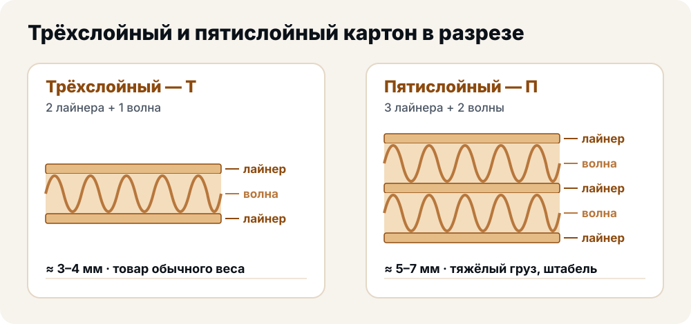
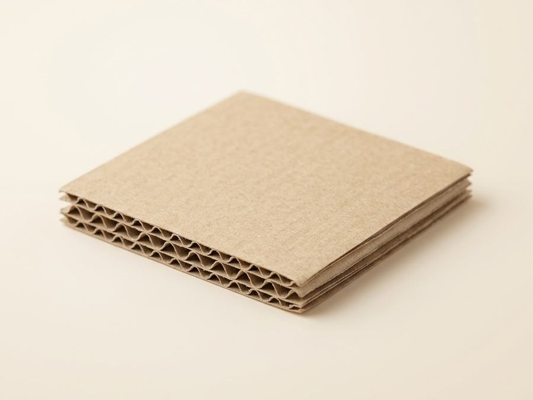
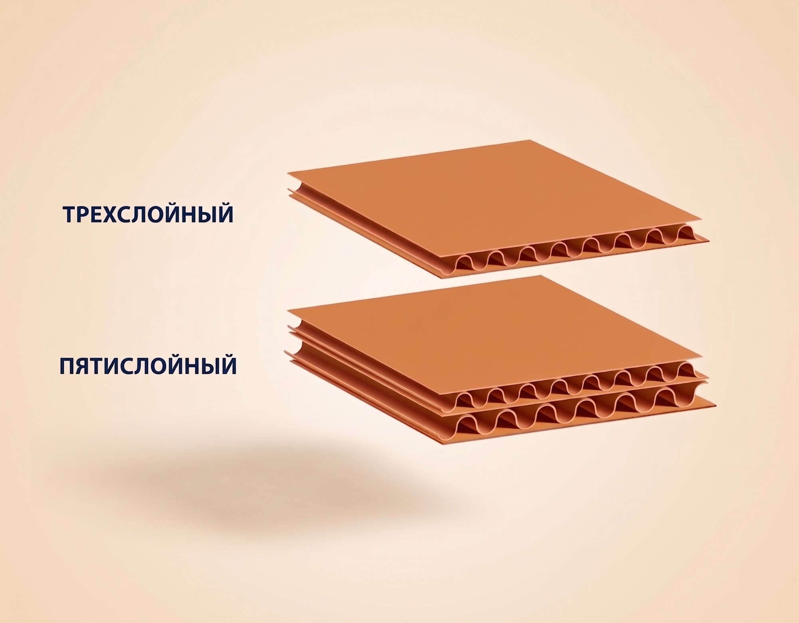
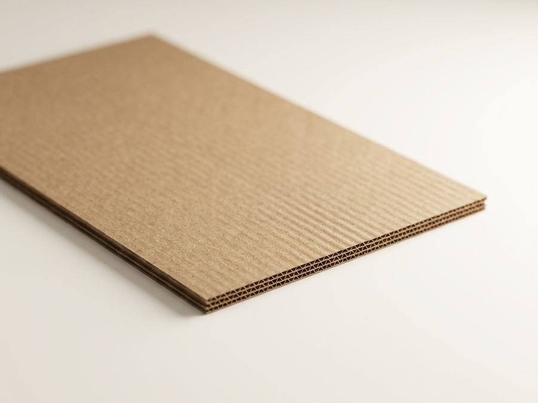

Три слоя — это одна волна гофры между двумя плоскими стенками. Пять слоёв — две волны и три стенки, то есть тот же «сэндвич», собранный дважды. Под товар обычного веса берут три слоя, под тяжёлый, хрупкий и дальнюю перевозку — пять.

Чем они отличаются в работе
Трёхслойный гофрокартон — основной материал производства. Из него делают короба, ящики, лотки и уголки. Он легче, дешевле и отлично держит обычный товар — от бытовой мелочи до коробки весом в несколько килограммов.
Пятислойный держит вес и жёсткие условия перевозки: тяжёлый и габаритный товар, многооборотную тару, экспортные отправки. Две волны работают как двойная амортизация: короб хуже продавливается сверху при штабелировании и лучше терпит удары по углам.
Число слоёв — это не единственный запас прочности. У пятислойного короба прочность сильно зависит от направления волны гофры относительно нагрузки: даже правильно выбранная марка П-32 «просядет» при штабелировании, если короб собран не по тем рёбрам жёсткости. Поэтому под тяжёлый или высокий штабель важно не просто заказать «пять слоёв», а согласовать раскрой короба с технологом — это делаем бесплатно при расчёте.
Простое правило выбора
- Три слоя — лёгкий и средний товар, короткое плечо доставки, невысокая стопка на складе.
- Пять слоёв — тяжёлый или габаритный груз, хрупкое содержимое, дальняя перевозка, высокий штабель.
- Микрогофрокартон — лёгкие и хрупкие товары и потребительская упаковка с печатью: тонкий, но прочный лист.
Три слоя или пять: что выбрать
Одна волна гофры между двумя стенками. Легче и дешевле в тираже, закрывает 80–90% заказов: бытовая техника, посуда, одежда, продукты питания, товары для маркетплейсов. Берите три слоя, если короб не штабелируют выше двух-трёх рядов и везут недалеко.
Две волны и три стенки — двойная амортизация. Нужен там, где короб штабелируют в несколько рядов, везут далеко или кладут тяжёлый груз: стройматериалы, запчасти, крупную бытовую технику, экспортные отправки. Переплата оправдана только под такую нагрузку.
Где не стоит экономить, а где не стоит переплачивать
Два перекоса встречаются одинаково часто. Первый — пятислойный короб под лёгкий товар: упаковка дорожает, а пользы ноль. Разницу видно прямо в прайсе: трёхслойный короб 600×400×400 мм стоит дешевле пятислойного 577×392×323 мм на том же тираже.
Второй перекос — трёхслойный короб под тяжёлый груз. Такой короб «ведёт» при штабелировании, углы мнутся, а при дальней перевозке он может разойтись по рёбрам. Экономия в копейках на коробе оборачивается боем товара.
Что стоит в нашем прайсе
| Конструкция | Марка | Размеры, мм | Когда брать |
|---|---|---|---|
| Три слоя | Т-22 | 600×400×400, 400×300×300, 380×253×237, 320×250×250, 200×200×250 | Товар обычного веса |
| Пять слоёв | П-32 | 577×392×323, 600×400×280 | Тяжёлый и габаритный товар |
Цены по тиражам — в таблице на странице «Гофроящики». Что означают сами обозначения, разобрано в статье марки гофрокартона.
Если товар хрупкий, толщина картона решает не всё: часто дешевле оставить трёхслойный короб и зафиксировать содержимое внутри — прокладками и решётками.
Что выдерживает каждый вариант
| Показатель | Трёхслойный (Т) | Пятислойный (П) |
|---|---|---|
| Максимальный вес в коробе | до 15–20 кг | до 30–40 кг |
| Штабелирование | 2–3 короба в высоту | 4–5 и выше |
| Цена за м² относительно | базовая | +40–60% |
Цифры ориентировочные и зависят от марки картона, раскроя короба и условий перевозки — точную нагрузку и цену считаем под конкретный товар при расчёте заказа.
Пятислойный картон стоит на 40–60% дороже, но держит вдвое больше — переплата оправдана только тогда, когда груз реально тяжёлый, габаритный или едет далеко.



Частые ошибки при выборе числа слоёв
- Заказывают пять слоёв «с запасом» для лёгкого товара — короб становится толще, тяжелее и дороже, а прочность сверх нужной не используется.
- Не учитывают высоту штабеля на складе или в фуре: даже правильная марка просядет, если груз кладут выше расчётной нагрузки на короб.
- Путают толщину картона с защитой содержимого: хрупкий товар часто лучше держат не пять слоёв, а прокладки и решётки внутри трёхслойного короба.
- Не сообщают о дальней или мультимодальной перевозке — именно от неё зависит, хватит ли трёх слоёв или нужно закладывать пять сразу.